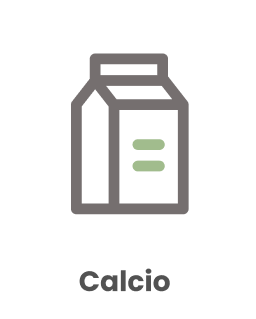

<!DOCTYPE html>
<html lang="es">
<head>
    <meta charset="UTF-8">
    <meta http-equiv="X-UA-Compatible" content="IE=edge">
    <meta name="viewport" content="width=device-width, initial-scale=1.0">
    <title>Introducción</title>
    <link rel="shorcut icon" href="../img/logo.png">
    <link rel="stylesheet" href="../css/style.css">
</head>
<body>
    <nav class='background'>
        <!-- Por ahora le cambio las dimensiones a las imagenes (lo cual no es muy eficiente).
        Mas adelante importaré las imagenes con el tamaño ya definitivo. -->
        <div class="margin_logo">
            <a href="../index.html"></a>
        </div>

        <div class="margin_pages">
            <ul class="row_list">
                <li><a href="../pages/introduccion.html">Introducción</a></li>
                <li><a href="../pages/objeciones.html">Objeciones</a></li>
                <li><a href="../pages/temas-complejos.html">Temas Complejos</a></li>
                <li><a href="../pages/salud.html">Salud</a></li>
                <li><a href="../pages/compras.html">Compras</a></li>
                <li><a href="../pages/recetas.html">Recetas</a></li>
            </ul>
        </div>
    </nav>
    <main>
        <h1 class="introduction__title">Salud</h1>
        <p>
            Sí, es posible. Una alimentación vegana equilibrada es saludable en todas las etapas de nuestras vidas <br>
            (incluyendo embarazo, lactancia, infancia y vejez) e incluso para deportistas. Así lo handemostrado <br>
            y afirmado expertos, como los de la Academia de Nutrición y Dietética, y muchos otros avales.

        </p>
        <div id="">
            
            <a href="">Aprende de Salud</a>
        </div>


    </main>

    <section>

        <h2>Nutrientes</h2>
        <p>
            Usualmente hay dudas de dónde obtener ciertos nutrientes en una alimentación vegana. <br>
            Es posible! Aquí puedes revisar de dónde obtener los nutrientes críticos:
        </p>
        <div>
            <a href=""></a>
            <a href=""></a>
            <a href=""></a>

        </div>

    </section>

    <section>
        <a class='button2' href="">Nutricionistas Cerca de ti</a>
    </section>


    <section>
        <h2>Avales</h2>
        <div>

            <a href=""></a>
            <a href=""></a>

        </div>
    </section>

    <footer class='background flexbox_2'>
        <div class="margin_contacto">
            <h4>Contacto</h4>
            <ul class="no_bullets">
                <li>Telefono: +56993471839aa</li>
                <li>Mail: veginchile@gmail.com</li>
            </ul>
        </div>
        <div>
            <h4>Síguenos:</h4>
            <!-- por ahora los links no llevan a nada -->

            <ul class="row_list">

                <li><a href=""></a></li>
                <li><a href=""></a></li>
                <li><a href=""></a></li>
            </ul>
        </div>
    </footer>

</body>
</html>